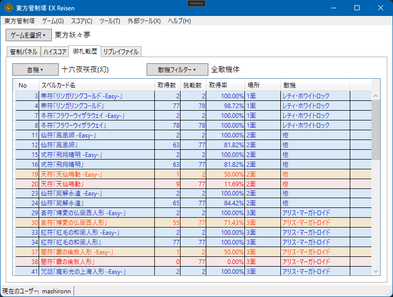

また，新機能として，御札戦歴データのカラーリングが実装されています(ver0.13.0-beta.1から実装の新機能)．

取得率が80%以上で青，50%以上80%未満で黄色，50%未満で赤に各列がカラーリングされます．
現在，ver1.0.0-alpha.1 のダウンロードが可能です．
ダウンロードは こちら から
本バージョンは現在(2026/05/19)，開発中のアルファ版です．アルファ版であることを念頭にご利用ください．

